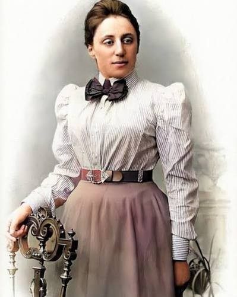

Luz simétrica
Los anillos luminosos evocan estructura, invariancia y la relación entre simetría y conservación que Noether ayudó a establecer.
La matemática que descubrió que cada simetría continua esconde una ley de conservación, en una época que tardó en reconocerla.
¿Por qué este título?
El título «Luz simétrica, sombra social» une dos dimensiones de Emmy Noether: la claridad de su pensamiento matemático y las barreras sociales que atravesó para desarrollarlo.
Los anillos luminosos evocan estructura, invariancia y la relación entre simetría y conservación que Noether ayudó a establecer.
Los remolinos oscuros representan los obstáculos que enfrentó por ser mujer, como enseñar sin sueldo, y por ser judía bajo el régimen nazi, que la despidió en 1933.
1882 — 1935

Selecciona un año para recorrer su historia.
Nace el 23 de marzo en Erlangen, Alemania, en una familia judía de matemáticos. Su padre, Max Noether, era profesor en la universidad.
Fuentes históricas: Universidad de Göttingen y MacTutor.
Una simetría es una transformación bajo la cual algo esencial permanece igual. Noether demostró que, cuando la acción física es invariante ante una simetría continua, existe una cantidad conservada asociada.
TRES CONEXIONES
Selecciona una transformación para descubrir qué magnitud conserva un sistema cuando su acción posee esa simetría.
Si las leyes que describe la acción no cambian al desplazar el instante de tiempo, se conserva la energía.
03 / LA SOMBRA SOCIAL
Mientras sus ideas transformaban las matemáticas, Noether tuvo que superar restricciones institucionales por ser mujer. Durante años trabajó sin un puesto estable, y solo gradualmente pudo enseñar oficialmente en Göttingen.
Los remolinos y las formas semejantes a miradas de nuestro póster simbolizan esa presión social: no muestran un hecho físico, sino una interpretación del entorno que rodeó su trabajo.
Una misma superficie reúne la búsqueda del equilibrio y las fuerzas que lo ponen a prueba.
LA OBRA ORIGINAL
El núcleo circular, los anillos, la frontera diagonal y las miradas se unen en una composición creada con p5.js. Toca los marcadores para descubrir la interpretación de cada elemento.

EXPLORA LA OBRA
01 / 04Las curvas concéntricas evocan una estructura que conserva su organización al girar. Es la interpretación visual de la simetría de rotación.
05 / EL LEGADO
Noether dejó una nueva manera de pensar las estructuras algebraicas y una de las conexiones más profundas de la física matemática. Nuestra obra recuerda que la producción de conocimiento sucede dentro de una sociedad: entre descubrimientos, reconocimiento y obstáculos.